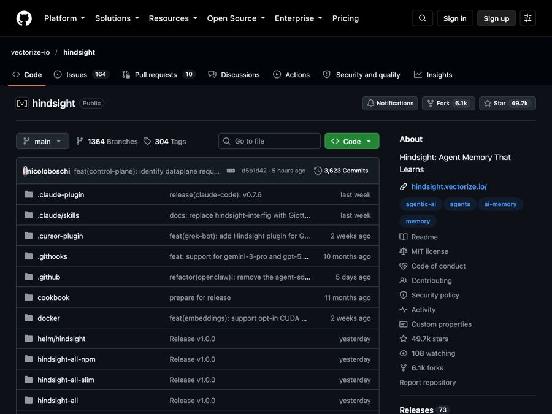

Hindsight: give your AI helper a memory that actually learns
A free memory system that helps AI agents remember past chats and learn from them, instead of starting from zero every time.

The problem it solves
You tell an AI chatbot your name, your job and what you like. The next day, it has forgotten all of it. You explain everything again.
This is a real headache for anyone building AI helpers. A support bot forgets the customer it spoke to last week. A sales helper forgets which emails worked. Every chat starts from a blank page.
Hindsight is built to fix that.
What it is
Hindsight is a free, open-source memory system for AI agents. An "agent" is an AI helper that can do tasks on its own, not just answer one question.
Most memory tools only replay old chat history. Hindsight goes further. Its goal is to help agents learn, not just remember.
It sorts memories a bit like a human brain does:
- World facts: things that are true about the world.
- Experiences: what the agent itself did and what happened.
- Observations: beliefs it forms from many memories, with the proof kept alongside.
- Mental models: a standing answer to a question, like "What does this user prefer?", which it keeps up to date.
The team says it scores at the top of LongMemEval, a well-known test of long-term memory. They also say outside researchers at Virginia Tech and The Washington Post reproduced those results.
Who it's for
Hindsight is mainly for people who build AI apps. That includes:
- Developers adding memory to a chatbot or AI assistant.
- Startups building "AI employees" that handle open-ended work.
- Teams making support, sales or project helpers that should get smarter over time.
The README gives examples like an AI project manager thinking about risks, a sales agent working out why some messages get replies, and a support agent spotting questions the help docs don't answer.
If you are not technical, you won't use this directly. But it may power the AI tools you use at work.
What you can do with it
- Retain: save new facts. It pulls out key facts, dates, people and how they connect.
- Recall: look up memories four ways at once (by meaning, by keyword, by links between things, and by time), then rank the best results.
- Reflect: think deeply over everything it knows to answer a harder question.
- Memory banks: keep a separate "brain" for each user, agent or project, with no mixing between them.
- Many AI providers: works with 25+ AI providers, such as OpenAI, Anthropic and Gemini, plus options that run on your own machine.
- Lots of add-ons: the README lists 60+ integrations, including coding helpers like Claude Code and Cursor, and no-code tools like n8n and Zapier.
- Two-line setup for existing bots: a "wrapper" saves and fetches memories on every AI call with almost no code changes.
- Many languages: facts stay in the language they were written in.
- Memory Defense: an optional setting that scans for secrets and personal details and hides or blocks them before they are saved.
- Clients for many coding languages: Python, JavaScript, Go and a command-line tool.
How to start, step by step
You need a computer (Mac, Linux or Windows), the free Docker app, and an account key from an AI provider such as OpenAI.
- Install Docker. Docker is a free app that runs other apps in a neat box. Get it from docker.com.
- Get an AI account key. For example, an OpenAI API key. An API key is a password that lets apps use your AI account.
- Open Terminal and paste the start command from the README, with your key in place of
sk-xxx:
export OPENAI_API_KEY=sk-xxx
docker run -it --pull always --name hindsight --restart unless-stopped -p 8888:8888 -p 9999:9999 \
-e HINDSIGHT_API_LLM_API_KEY=$OPENAI_API_KEY \
-v hindsight-data:/home/hindsight/.pg0 \
ghcr.io/vectorize-io/hindsight:latest
- Open the dashboard. Go to
http://localhost:9999in your browser. The API (the part apps talk to) lives athttp://localhost:8888. - Connect your app. Install the client, for example
pip install hindsight-client, and follow the README's short examples.
Prefer not to use Docker? You can also install it with pip install hindsight-api.
Good to know
- It needs an AI model. Hindsight uses an AI model to pull out facts. If you use a paid provider like OpenAI, you pay that provider for what you use.
- There is a paid hosted option. Hindsight Cloud runs it for you. The README says billing is based on use, with free credits to start and no fixed monthly fee. The self-hosted version is free.
- Your data stays with you when you run it yourself. Memories are stored on your own machine.
- It may be too much for simple jobs. The README itself says it may be overkill for simple workflows.
- Intel Macs need a slimmer version. The README explains which one.
- MIT license means you can use, change and share it for free, even in a business. Just keep the copyright notice.
The bottom line
Hindsight gives AI helpers a real memory that grows over time. It is free, works with many AI providers, and has strong test scores. It takes some setup, so it's best for people building their own AI tools.
Get it: github.com/vectorize-io/hindsight
Keep reading

DBX: one small free app to open and edit 100+ kinds of databases
DBX is a free, tiny app that lets you browse, search and edit over 100 kinds of databases, with an AI helper that writes queries for you.

PureMac: free up space on your Mac without a subscription
PureMac is a free, open-source Mac cleaner that removes junk, fully uninstalls apps, and never tracks you or tries to scare you.

Strata: run a big, private AI chatbot on your own gaming PC
A free one-click installer that runs a large Qwen AI model on a normal gaming PC, so your chats never leave your computer.